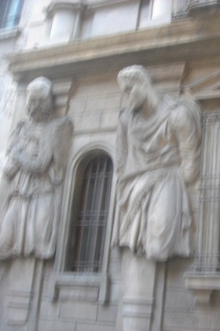

Left: original image. Middle: blurred image. Right: deblurring result.
This example is about blind total variation deblurring. Given a blurry image ($f$), the goal is to simultaneously find a sharp image ($u$) and the blur kernel ($k$). This can be formulated as
$$
\min_{u,k} \| u * k - f \|_2^2 + \lambda TV(u) \text{ s.t. } k\geq 0, 1^T k = 1
$$
where $*$ is the convolution operator and $TV(u)$ is the total variation penalty:
$$
TV(u) = \sum_{ij}\sqrt{ (u_{i,j+1}-u_{i,j})^2 + (u_{i+1,j}-u_{i,j})^2 }
$$
This problem is nonconvex and is solved by taking gradient steps along $u$ and $k$. The code is a reimplementation of [1] (see also their project webpage).
Examples
For the synthetically blurred mandril image above, the call is:
The implements convolutions with FFTs, and is not very particularly fast. This is the time it takes to deblur a 256x256 image.
Several additional examples are shown below.

Deblurred image appears on mouseover (and the pair is linked). The recovered blur kernel is shown in top left corner. Notice that although most of the image is clearer, errors persist near statues' heads. This example is difficult: ocean floor appears a vague texture. But the algorithm is able to recover some details! Since the fish is moving, its ``blur'' is different from the rest of the image. As a result, some ghosting persists.This example is simple. Although some ghosting persists, overall the image is clearer.
References
"Total Variation Blind Deconvolution: The Devil is in the Details", D. Perrone and P. Favaro, CVPR, 2014 (project website)
T. Chan and C. K. Wong. "Total Variation Blind Deconvolution." Transactions on Image Processing, 1998.
{kind=link}
{kind=link}
{kind=link}
{kind=link}